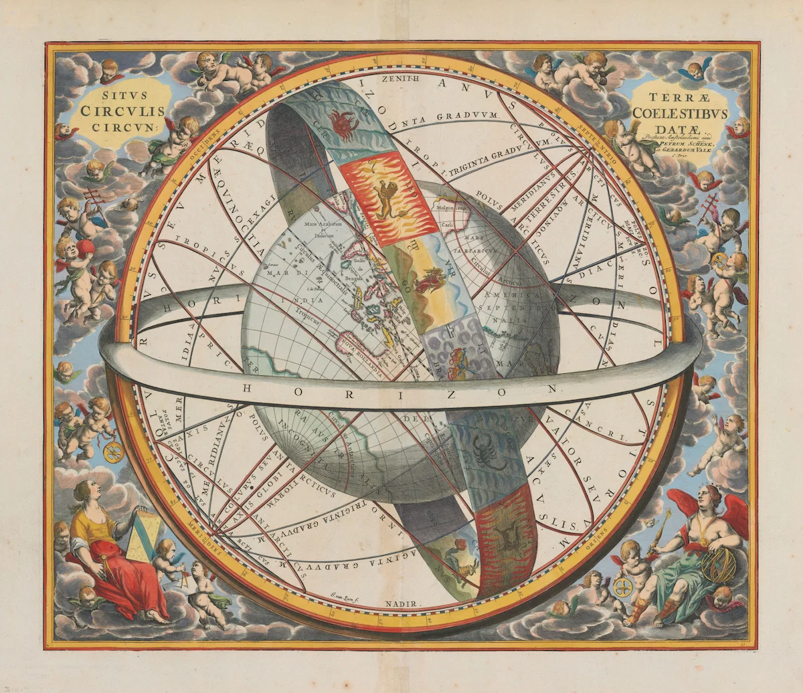

Curso Online
Astrología Arquetípica
Descripción del curso
Este curso ofrece una introducción a la astrología desde una perspectiva arquetípica y simbólica, orientada a la comprensión de la carta natal como un mapa de sentido y autoconocimiento.
A través del estudio de los planetas, signos y casas como expresiones de arquetipos universales, el curso invita a leer el lenguaje del cielo como una herramienta para comprender los procesos vitales, la experiencia personal y las dinámicas interiores.
¿A quién está dirigido?
Personas interesadas en la astrología como herramienta de comprensión simbólica y autoconocimiento, que deseen aprender a leer su carta natal desde una mirada profunda y reflexiva. No se requieren conocimientos previos.
Temario
- ✦ Astrología como lenguaje simbólico
- ✦ Planetas como arquetipos
- ✦ Signos y casas
- ✦ Lectura de la carta natal
Lo que aprenderás
- Comprender la astrología como lenguaje simbólico
- Reconocer arquetipos en la carta natal
- Interpretar planetas, signos y casas
- Realizar una lectura inicial de tu carta natal
- Utilizar la astrología como herramienta de autoconocimiento
Docente
Gheraldyni Miranda, Astróloga con más de 10 años de experiencia.